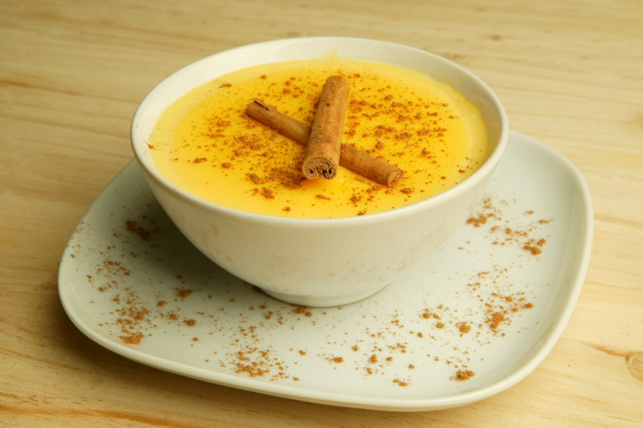
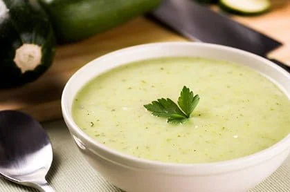
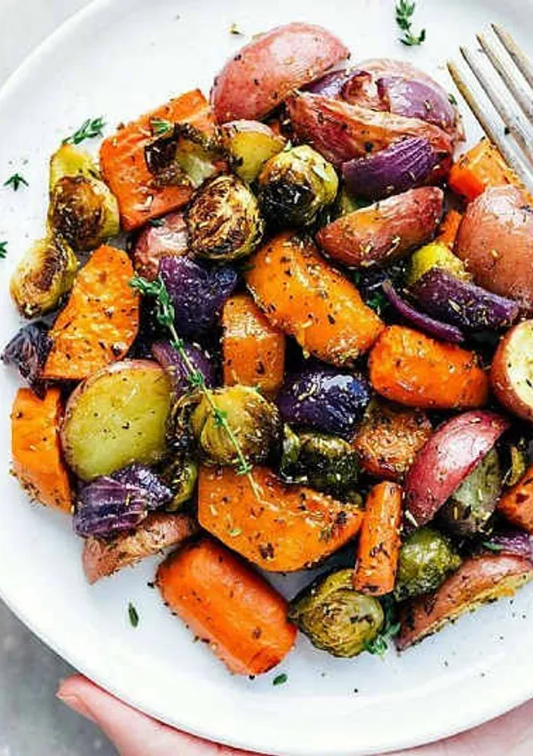

Natillas caseras
Un postre suave y tradicional.

Ver la recetaUn postre suave y tradicional.

Ver la recetaGalletas caseras perfectas para la merienda.
 Ver la receta
Ver la receta
Una tapa clásica que gusta a todos.
 Ver la receta
Ver la receta
Patatas doradas con una salsa sabrosa.
 Ver la receta
Ver la receta
Una crema suave y sencilla de preparar.

Ver la recetaVerduras variadas, tiernas y doradas.

Ver la receta